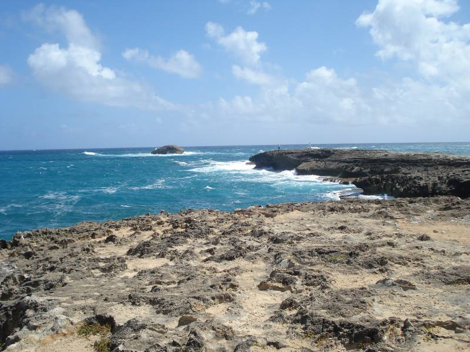

About Laie Point
Laie Point is a scenic location on the northeastern side of Oahu. Visitors can see ocean waves, rocky formations, and beautiful coastal views. It is a wonderful place to enjoy the natural scenery.

Laie Point is a scenic location on the northeastern side of Oahu. Visitors can see ocean waves, rocky formations, and beautiful coastal views. It is a wonderful place to enjoy the natural scenery.
